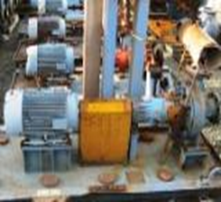

Электр юритма асослари
Режа:
1. Умумий тушунчалар.
2. Электр юритманинг ҳаракат тенгламаси.
3. Электр юритманинг механик характеристикаси.
4. Электр юритмадаги ўтиш жараёнлари.
5. Электр двигателларнинг қувватини танлаш.
6. Электр юритма учун двигатель турини танлаш бўйича умумий тавсиялар.
7. Электр юритмани тиристор билан бошқариш
Электр юритма мурракаб электромеханик тизим булиб одатда улар электр юритма элементларидан ташкил
топади. Электр юритма назариясида бу элементлар бажариладиган вазифасига кура таснифланади
Электр юритмалар дастлаб мотор турига караб куйидаги турларга булинади:
асинхрон электр юритма:
узгармас ток электр юритмаси:
синхрон электр юритма:
чизикли электр юритма:
Электр юритмаларни урганишда купинча структуравий схемалардан фойдаланилади. Бунда хар бир элемент
алохда туртбурчак шаклида ва кириш хамда чикиш сигналлари билан берилади.
Электр юритмаларни ишлаш принциплари функционал схемаларда ва принципиал электр схемаларда
ифодаланади.
Ундан ташкри хар бир элементнинг бошка элементлар билан бошланишлари курсатилади. Хар бир элемент
одатда структуравий схемаларда узатиш функциялари билан еки узатиш коэффициентлари билан характерланади.
Функционал схемаларда функцонал бирлик сифатида алохида курилма олинади ва уларни ишлаш принципи
билан боглаб берилади.
Принципиал схемаларда электр юритманинг куч ва бошкарув занжиридаги электр богланишлар бир чизикли
электр схемада берилади.
Электр схемадаги элементлар (контактлар, коммутацион аппаратлар реле ва х.к.) шартли белгилар оркали
курсатилади.
Электр юритма харакатни узатилишига караб куйидаги гурухларга булинади:
Трансмиссияли, бунда харакат бир мотордан бир неча ишчи механизмга узатилади;
Индивидуал (якка), бунда хар бир ишчи орган алохида моторга (юритмага) эга булади;
Узаро богланган (куп моторли), бунда электр юритма тизими бир технологик жараёнда ягона бошкариш
тизими оркали бир неча (унлаб) моторларни уз ичига олади.

Электр юритма тезлиги еки холатини ростлаш буйича куйидаги гурухларга булинади:
а) росланмайдиган, бунда мотор бир узгармас тезликда ишлайди;
в) таклидий, бунда мотор тезлиги шаблон харакати билан бир хил узгариши таъминланади;
г) дастурли бошкариладиган, бунда мотор тезлиги ракамли курилма оркали дастур буйича бошкарилади;
д) адаптив (узи мосланувчан), бунда мотор тезлиги мухитнинг узгаришига караб автоматик ростланади;
е) позицион (вазиятни ростловчи), бунда мотор тезлиги ишчи органининг вазиятини ростлашини
таъминлайди.
Автоматлашган электр юритма таркибига яна электр энергия узгарткичи, датчиклар ва электр юритмани
бошкариш тизими киради.
Бундан ташкари электр юритма таркибига аниклик ва тезликни оширадиган кушимча элементлар киритилиши
мумкин. Масалан ЭХМ, ракамли датчиклар, мувофиклаштирувчи элементлар кулланилиши мумкин.
Электр юритмалар автоматлаштириш даражаси бўйича қуйидаги груҳларга бўлинади:
1.
Автоматлаштирилган электр юритмалар, бунда электр юритма тўла дастаки бошқарилади. Ҳозирги пайтда бундай
электр юритмалар кам учрайди. Асосан кичик қувватли саноат ёки маиший қурилмалар юритмалари бунга мисол
бўла олади.
2.
Автоматлаштирилган электр юритмалар. Бундай электр юритмаларни чикиш параметрлари ростланадиган булиб
бошкарув операцияларини бир кисмини электр юритма бир кисмини эса инсон томонидан хосил килинади. Бу
электр юритмаларда асосан автоматик юргизиш, автоматик тормозлаш ва тезликни ростлаш амалга оширилади.
3.
Автоматлашган электр юритмалар . Бу электр юритмаларда бошкарув сигнали инсон иштирокисиз хосил килинади
ва бошкарилади. Бундай электр юритмалар саноат роботлари ва манипуляторларда кулланилади.
Ҳозирги кўпгина машина ёки мехенизмлар электр двигателлар ёрдамида юритилади. Ҳар қайси фабрика, завод,
цех, механизациялашган транспорт ва қишлоқ хўжалигини иш механизмларисиз тасаввур қилиш қийин. Электр
двигателларининг халқ хўжалигида кўп қўлланилишига уларнинг фойдали иш коэффициенти нисбатан юқори
бўлиши ишга тушириш ва тўхтатиш учун кам вақт сарф бўлишига сабаб бўлмокда. Замонавий электр, машинаси
кўп сонли турли қисмлардан иборат. Уларнинг ҳар бири турли вазифани бажарсада, уларнинг биргаликда
ишлаши маълум ишлаб чиқариш жараёнини амалга оширишга қаратилгандир. Ишлаб чиқариш жараёнларини
автоматлаштириш ва механизациялашни замонавий бошқариш воситаларига эга бўлган электр юритмаларни
қўлламасдан амалга оширишни тасаввур қилиш қийин.
Автоматлашган электр юритмаларнетнг ҳозирги пайтда ривожланган автоматик бошқариш, назорат қилиш ва
ростлаш назариясига ва воситаларига эга бўлиши якка ва боғланмаган автоматизациялашдан комплекс, яъни
жамланган ва ўзаро боғланган автоматик системага ўтиш имкониятини беради. Ҳозирги вақтда
автоматлаштирилган дасгоҳлар, қатор мураккаб машиналар, цехлар ва ҳатто заводлар бор. Уларда бутун иш
жараёни ва бошқариш автоматлаштирилган бўлиб, хом ашё тайёр маҳсулот даражасига етказилади.
Автоматлаштирилган электр юритмани қўллаш меҳнат унумдорлигини ортишига, маҳсулот сифатинииг
яхшиланишига ва таннархининг камайишига ҳамда ишлаб чиқариш майдонининг қисқаришига олиб келади.
Ҳозирги вақтда ва яқин келажак учун электр юритмаларнинг қуйидаги асосий ривожланиш йўналиши
белгиланган: деҳқончилик ва чорвачилик хўжаликларида ҳамда транспортда электр юритмадан фойдаланишни
кенгайтириш; замонавий электротехника материаллари ва воситаларини қўллаш асосида мавжуд электр
юритмаларни такомиллаштириш ва уларнинг янги турларини яратиш.
Электр юритманинг бир турғун ҳолатдан иккинчисига ўтиши ҳамда уни ишга тушириш, тўхтатиш, ҳаракат
йўналишини ўзгартириш электр юритманинг ўтиш режими деб аталади.
Бунда унинг тезлиги, моменти ва ундаги токнинг қиймати ўзгаради Электр двигателнинг қувватини бошқариш
схемасини ва аппаратларни тўғри танлаш, двигателни ишга тушириш ва тўхтатиш вақтида электр энергия
сарфини камайтириш каби масалалар катта аҳамиятга эга: Масалан, механизмнинг иш унумини ошириш учун
оптимал тезликни танлаш етарли булмай, балки электр юритманинг ўтиш режимининг вақтини камайтириш ҳам
керакдир.
Электр юритманинг ўтиш режими электр двигателнинг ва иш механизмининг ишлаш динамикаси билан
боглангандир.
Электр двигатель ишлаганда ҳосил бўлувчи айлантириш моменти М электр юритманинг турли қисмларига
таъсир этувчи қаршилик моменти билан мувозанатлашади.
Қаршилик моментларини пайдо бўлиш сабабларига кўра қуйидаги уч гуруҳга бўлиш мумкин:
1. Иш машинаси ижрочи қисмининг фойдали иш бажаришда ҳосил бўлувчи моментлар.
2. brИш машинаси ва узатиш қурилмаси ҳаракатланувчи қисмларининг ишқаланишидан ҳосил бўлувчи моментлар.
3. Иш машинаси ва узатиш қурилмаси ҳаракатланувчи қисмларининг инерциясидан ҳосил бўлувчи моментлар.
Биринчи ва иккинчи гуруҳ-моментларини статик қаршилик моменти (Мк), учинчи гуруҳ
моментини эса
динамик каршилик моменти (Мдин) дейилади.
Электр юритма системасидаги моментларнинг мувозанатлик тенгламаси қуйидагича ифодаланади:
М = Мк ± Мдин (1)
Ўқнинг айланиш тезлигишни айланишлар сони n (айл/мин] да ифодалаб:

динамик моментнинг бошқа ифодасини келтириб чиқариш мумкин:
Кўпгина ишлаб чикариш механизмларида инерция моменти ўзгармас бўлиб, қуйидаги ифода билан аниқланиши
мумкин:
бу ерда; р ва D — инерция радиуси ва диаметри, м; G - жисмнинг оғирлиги, кг;
g = 9,81 м/с2 эркин тушиш тезланиши.
(4) ифодани (3) га кўйиб, динамик момент учун қуйидаги ифодани ҳосил қилиш мумкин:
(3) ёки (5) ифода электр юритманинг ҳаракат тенгламаси деб аталади.
Демак, динамик момент фақат ўтиш режимида пайдо бўлади.
Юритманинг тезланишида бу момент ҳаракатга тескари йўналган бўлиб, тезликнинг ошишига қаршилик
қилади,
тормозланишда эса ҳаракат, бўйича йўналиб, ҳаракатнинг давом этишига ёрдам беради.
Қаршилик моментини ўз характерига қараб реактив ва актив моментларга ажратиш мумкин.
Реактив момент қисиш, кесиш, ишқаланишлар таъсирида юзага келиб, юритманинг ҳаракатига қаршилик
қилади
ва ҳаракат йўналиши ўзгарса, ўз ишорасини ўзгартиради.
Актив момент оғирлик кучи ҳамда қайишқоқ жисмни чўзиш, қисиш ва бурашда ҳосил бўлган
қаршилик моментидан
иборат бўлиб, юритма ҳаракатига қаршилик қилиши ва ҳаракат йўналиши ўзгаришига ёрдам бериши мумкин. У
ҳаракатнинг ҳар икки йўналишида ҳам ўз ишорасини ўзгартирмайди.
Демак. электр юритманинг ҳаракат тенгламасини умумий ҳолда қуйидагича ёзиш мумкин:
(6) тенгламадаги моментлар ишорасини танлаш двигателнинг режимига ва қаршилик моментининг характерига
боғлиқ.
Электр юритманинг ҳаракат тенгламаси берилган режимда юритманинг тезлигини, юритмадаги двигателни
ишга тушириш ва тўхтатиш вақтини, берилган вақтда иш машинасини ишга тушириш учун зарур бўлган моментни
аниқлаш имконини беради. Шунингдек, юритманинг механик характеристикаларидан ҳам фойдаланилади
Электр юритма тезлигининг моментга қараб ўзгариши электр юритманинг механик харатеристикаси деб
аталади.
Мазкур характеристикани шартли равишда
иш механизмнинг
электр двигателнинг
механик характеристикаларига ажратиш мумкин.
Иш механизимининг ишчи характеристикаси. Электр юритманинг иши иш механизимини харакатга келтирувчи
электр двигателнинг механик хусусияти билан иш механизми характеристикаларнинг ўзаро мос келишига кўп
жиҳатдан боғлиқдир. Электр юритманинг ўтиш жараёни (ишга тушириш, тормозлаш ва тезликни ростлаш)даги иши
двигателнинг айлантириш моменти билан механизм каршилик моментларининг тезликка нисбатан ўзгаришига
боғлик.
Механизмнинг каршилик моменти билан тезлиги орасида боғланиш унинг механик характеристикаси (n=f
(Мк)) деб аталади.
Қаршилик моментининг хусусиятига қараб механизмларнинг механик характеристикалари турлича бўлиши мумкин.
Электр двигателнинг механик характеристикаси. Электр двигателнинг хусусияти, асосан унинг механик
характеристикасида тўларок ифодаланади.
Характеристикалардан маълум бўладики, электр двигател айлантириш моментининг ошиши двигателнинг айланиш
тезлигининг камайишига сабаб бўлади.
Моментнинг ўзгаришига боғлиқ равишда айланиш тезлигининг ўзгариш даражаси двигателларнинг турига боғлиқ
бўлиб, уларнинг механик характеристикаларининг “қаттиклиги“ билан аниқланади.
Агар тезлик қанча, кам ўзгарса характеристика шунча қаттиқроқ ҳисобланади. Характеристиканинг
қаттиқлиги (β) момент орттирмасининг, тезлик орттирмасига нисбати билан аниқланади, яъни
Қаттиқлик даражасига қараб электр двигателларнинг механик, характеристикаларини учта гуруҳга бўлиш
мумкин:
Мутлоқ қаттиқ механик характеристика.
Қаттиқ механик характеристика.
Юмшок механик характеристика.
Тезликларни ростлашнинг асосий кўрсаткичлари.
Жуфт қутблар сонини ўзгартириш, билан ўзгарувчан ва ўзгармас ток моторларнинг тезликларини ростлаш
Кучланишни ўзгартириш билан ўзгарувчан ва ўзгармас ток моторларнинг тезликларини ростлаш
Ток частотасини ўзгартириш билан ўзгарувчан ва ўзгармас ток моторларнинг тезликларини ростлаш
Ротор занжирига қаршилик киритиш билан ўзгарувчан ва ўзгармас ток моторларнинг тезликларини ростлаш
Узоқ ва қисқа муддатли юкланишларда ҳароратнинг кўтарилиши машина қувватини чекловчи асосий сабаб
бўлиб хособлангани сабабли электр машиналарининг юкланиш имкониятлари кўп холларда уларнинг қизиш
шароитларига кўра аниқланади.
Юкланишнинг ортиши билан электр машинасидаги исрофлар ортиб, ажралиб чиқаётган иссиқлик миқдори
ортиб боради ва ўта юкланиш холларида машинанинг айрим қисмларининг ҳарорати рухсат этилган чегаравий
миқдордан ортиб кетиши мумкин.
Қизиш тенгламаси. Электр машиналаридаги қизиш ва совиш жараёнлари уларнинг барча русумларида умумий
қонунлар асосида содир бўлади.
Электр машинада вужудга келадиган энергия исрофлари унинг чўлғамлари ва магнит ўтказгичи ҳароратини
кўтарувчи иссиқлик кўринишида бўлади.
вақт давомида электр машинасидан қисман электр машина ҳароратини миқдорга кўтаришга ва яна қисман атроф
мухитга тарқалувчи
иссиқлик энергияси ажралади. Вақтнинг ҳар қандай қисмида машинада иссиқлик энергия баланси мавжуд
бўлади.
Тиристорли электр юритмалар энг кенг таркалган ростланадиган электр юритмалар булиб унинг асосан
куйидаги турлари мавжуд :
Тиристорли Узгарткич
узгармас ток
мотори
(ТП-Д ).
Бунда
Тиристорли
Узгарткич
Узгарувчан
Токни
Узгармас
Токка
Узгартириб
Чикиш=
Кучланиши
и нолдан
Номиналга
А
узгартиради.
Тиристорли кучланиш узгарткичи – асинхрон мотор (ТПН-АД). Бунда тиристорли кучланиш узгарткичи
узгарувчан токни чикиш кучланиши узгарадиган узгарувчан токга айлантириб беради. Тезлиги ростланадиган
асинхрон моторларни купчилиги ушбу электр юритма тизимида ишлайди.
Тиристорли частота узгарткичи-асинхрон мотор (ТПЧ-АД). Бу узгарткич саноат частотадаги узгарувчан
токни чикиш кучланиши ва частотаси узгарадиган узгарувчан токка айлантириб беради. Бу усул энг замонавий
такомиллашган усул булиб охирги пайтда кенг таркаган электр юритма туридан биридир.
Узгармас ток генератори-узгармас ток мотори (Г-Д). Бунда узгармас ток генератори кучланиши уйготиш
токини узгартириш оркали ростланади. Мотор тезлиги эса асосан якор кучланишини узгартириш оркали амалга
оширилади. Бу электр юритмалар якин утмишда ростланадиган электр юритмаларни асосини ташкил этар эди.
Хозирги пайтда бу электр юритмаларни урнига частотали бошкариладиган асинхрон электр юритмалар кенг
кулланилмокда.